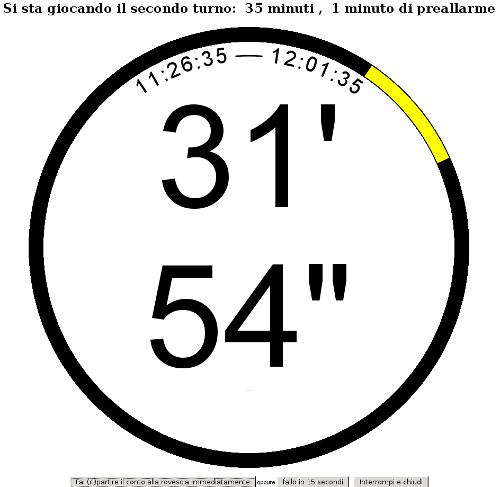
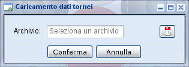

Altre finestre¶

Conto alla rovescia.¶
Conto alla rovescia¶
Questa pagina mostra un semplice conto alla rovescia che emette degli allarmi in determinati momenti (utilizzando SoundManager): la durata è determinata dai valori impostati in durata e preavviso sul torneo.
Il conto alla rovescia può essere attivato usando il primo pulsante in basso; un altro modo di farlo è usando il secondo pulsante che farà partire il tempo dopo 15 secondi, dando così modo all'operatore di raggiungere il proprio tavolo di gioco.
Chiudere la finestra con il conto alla rovescia (o usa il terzo pulsante in basso) per annullare l'allarme: per prevenire chiusure accidentali, viene richiesta una conferma esplicita.
Suggerimento
Dal momento che l'istante di attivazione del conto alla rovescia viene inviato a SoL
e memorizzato nel database, se per qualsiasi ragione il computer dovesse essere fatto
ripartire il conto alla rovescia verrà ripristinato dal medesimo istante.
Questo consente inoltre di mostrare più pagine con il conteggio, anche su computer diversi, ad esempio quando si desideri mostrare lo stesso conto alla rovescia in stanze diverse. Ovviamente in questo caso il conto alla rovescia deve essere fatto partire da una sola postazione, mentre sulle altre basterà richiedere la nuova visualizzazione dopo aver fatto partire il conto alla rovescia.

Caricamento dati torneo.¶
Caricamento¶
Con questa semplice finestra è possibile caricare i dati di un intero torneo, provenienti da
un'altra istanza di SoL. I nuovi dati non sovrascriveranno quelli esistenti, delle entità
preesistenti verranno aggiornati solo i dati mancanti.
Chiunque può caricare archivi .sol (o la versione compressa .sol.gz). Gli utenti
autenticati, tranne l'utente guest, possono caricare anche archivi .zip con i dati dei
tornei insieme ai ritratti dei giocatori e agli stemmi dei club.